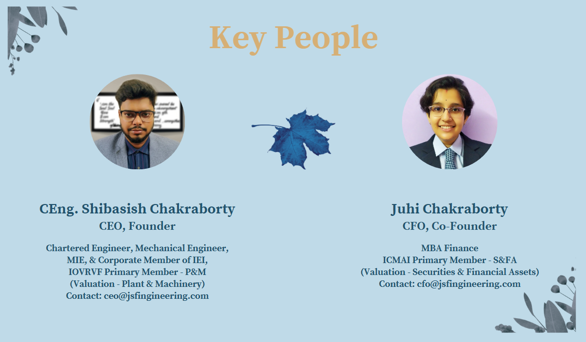

Your Goals,
Our Promise.
Project Management & Technical Audit Expert
Industrial Expertise in Energy & Power Sector. Integrated financial, engineering, business and multidisciplinary professional services for projects, assets, businesses, lenders, investors and institutions.
Engineering roots. Financial intelligence. Integrated execution.
JS FINGINEERING™ is a multidisciplinary professional services and consultancy platform built on an engineering foundation and expanded into integrated financial, business and technical advisory services.
Integrated Perspective
Finance + engineering + business thinking for better project and asset decisions.
Technical Strength
Project management, technical audit, independent engineering and asset assessment.
Financial Depth
Financial modelling, feasibility, funding, risk, due diligence and transaction support.
Technology Enabled
Digital business solutions, automation, analytics and generative AI-enabled professional services.
Four professional service verticals
A consolidated architecture designed to avoid duplication while preserving every major capability.
01 — Financial Services
- Financial Consultancy & Corporate Advisory
- Accounting & Financial Reporting
- Audit & Assurance
- Taxation, TDS/TCS & Regulatory Tax Support
- Financial Modelling, Planning & Forecasting
- Financial Due Diligence & Risk
02 — Engineering Services
- Engineering Consultancy & Project Support
- Independent Engineering / LIE
- TEV, Feasibility & Project Evaluation
- Technical Audit, Safety & Inspection
- Technical Due Diligence & Asset Assessment
- Design, FEA & Engineering Analysis
- Survey, Installation & Technical Field Services
- Certification & Professional Engineering Support
03 — Business & Management
- Business Strategy & Management Consultancy
- Corporate Advisory & Governance
- Valuation Services
- Business & Transaction Due Diligence
- Digital Business, Website & AI Solutions
- Trademark, ISO & Business Registration Support
04 — Multidisciplinary Services
- Integrated Project & Investment Assignments
- Integrated Due Diligence
- Integrated Valuation & Asset Assignments
- Corporate, M&A & Special-Situation Assignments
- Custom Multidisciplinary Studies
Deep-dive capabilities
Specialist landing pages consolidate related work instead of repeating the same services across multiple menus.
Valuation
P&M, industrial equipment, business, securities, financial assets, distressed assets and transaction valuation support.
TEV & Project Evaluation
Technical feasibility, project economics, financial viability, risk, sensitivity and sustainability assessment.
Independent Engineering / LIE
Appraisal, design review, cost/schedule, implementation, site verification, milestones and completion/O&M review.
Due Diligence
Technical, financial, commercial, business, project, asset and integrated multidisciplinary due diligence.
Technology & AI
Websites, digitalisation, workflow automation, data analytics and generative AI-enabled applications.
Audit & Assurance
Financial, operational, compliance, technical and specialist review assignments subject to applicable requirements.
Industrial expertise with broad application
Particular strength in Energy & Power, with capabilities applicable across industrial, infrastructure, corporate and financial ecosystems.
From independent engineering to integrated professional services
The Beginning
Er. Shibasish Chakraborty, B.Tech in Mechanical Engineering, started as a self-employed and independent consultant providing engineering and trading services.
Formal Business Commencement
Start-up business commenced under the previous name “Chakraborty Trading & Services” and was registered under West Bengal Professional Tax.
GST Registration & Brand Evolution
Registered under GST and the business name was amended to “JS FINGINEERING”, establishing the foundation of the present brand.
Formation of JS Group
Er. Shibasish Chakraborty and Juhi Chakraborty co-founded JS Group, primarily in manufacturing, with the product brand “Be Bold™”.
JS FINGINEERING™
Operating with a Registered Office and Branch Office in Kolkata, providing integrated financial and engineering services with a strategic focus on project management, technical audit and Energy & Power assignments.
Key People
Leadership combines mechanical engineering, finance and valuation-oriented professional capabilities.

Multidisciplinary collaboration when the assignment requires it
JS FINGINEERING™ can coordinate appropriately qualified professionals and specialist firms for project-based assignments.
Let’s build the right professional solution.
Reach out for consultancy, project evaluation, engineering assessment, financial analysis, valuation, due diligence, technical audit, project management and integrated multidisciplinary solutions.